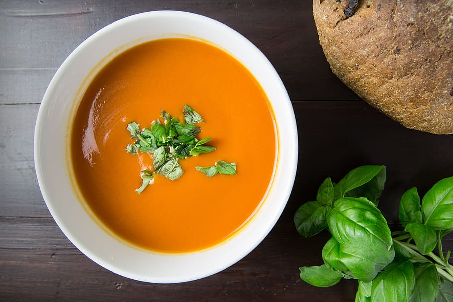

Tomato and Basil Soup

Description
This is a deliciously creamy tomato soup with the essence of basil. Using coconut milk instead of cream creates a rich in flavor and tasty dairy-free, gluten-free soup.
This is a small twist to a traditional comforting soup. You can make it even better serving grilled cheese toast along this soup
Ingredients
- 2 tbsp coconut Optional
- 1 yellow onion, finelly chopped
- 3 tbsp tomato paste
- 2 garlic cloves, crushed
- 1 tbsp gluten-free all purpose flour
- 3 cops vegetable oil
- 1 can crushed tomatoes
- 2 tbsp chopped fresh basil
- 1 tbsp fresh lemon juice
- 1 tbsp pure maple syrup
- 1 bay leaf
- 1 can coconut oil
- sea salt to taste
- fresh basil for garnish
Steps
- Heat coconut oil in a pot over medium-high heat. Saute onion in hot coconut oil until softened, about 5 minutes. Stir tomato paste and garlic with the onion; cook and stir until the garlic is fragrant, about 2 minutes more
- Sprinkle flour over the onion mixture and stir to incorporate; add vegetable broth, crushed tomatoes, chopped basil, lemon juice, maple syrup, and bay leaf. Bring the broth to a boil, reduce heat to medium-low, and cook at a simmer until the tomatoes are completely softened, about 20 minutes
- Turn heat below pot off. Remove and discard bay leaf. Pour soup into a blender. Hold lid in place and pulse blender a few times to get mixture moving before leaving on to blend into a puree; pour pureed soup into the pot and place over medium-low heat
- Stir coconut milk into pureed soup until the color is consistent; heat until the soup is warmed. Season soup with sea salt and garnish with fresh basil sprigs.